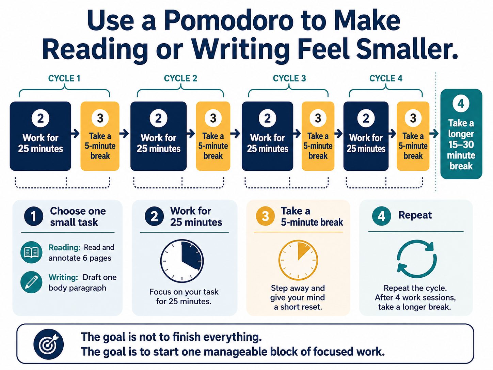
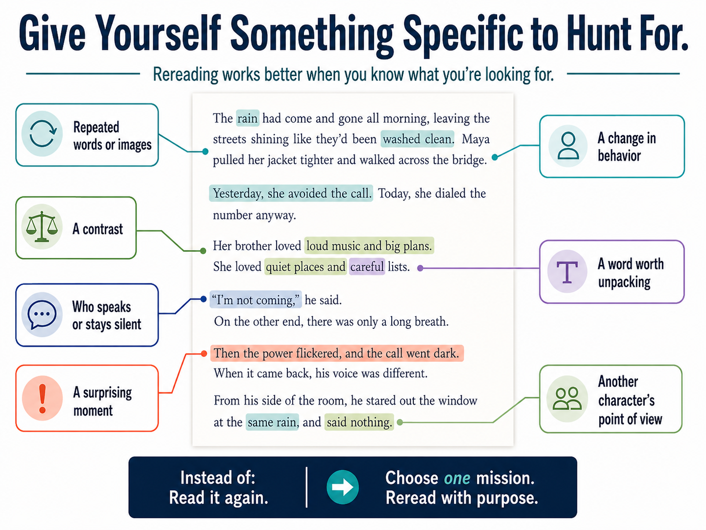

If you are analyzing a film, watch for one thing: camera choices, dialogue, silence, setting, character movement, recurring images, or changes in sound.
What Writers Actually Do When They’re Stuck
Getting stuck does not always mean you need to force yourself to produce more sentences. In literary analysis, it often means you have not yet done enough noticing, questioning, connecting, or close reading to know what you want to say next.
Experienced writers often stop drafting for a while and go back to the source. Two useful ways to make that return more manageable are to make the work smaller and to reread with one specific mission.
Strategy 1: Make the Work Smaller
If the task feels too large to begin, choose one small piece of reading or writing and work on only that piece for a limited block of time. A Pomodoro is one option, not a requirement. If timed work makes it harder for you to focus, use a small task boundary instead.

Read the full text version of this infographic
Use a Pomodoro to Make Reading or Writing Feel Smaller
The infographic shows four cycles. Each cycle contains 25 minutes of focused work followed by a 5-minute break. After four work sessions, take a longer 15–30 minute break.
1. Choose one small taskReading example: Read and annotate 6 pages. Writing example: Draft one body paragraph.
2. Work for 25 minutesFocus on the chosen task for one work block.
3. Take a 5-minute breakStep away and give your mind a short reset.
4. RepeatRepeat the cycle. After four work sessions, take a longer 15–30 minute break.
Takeaway: The goal is not to finish everything. The goal is to start one manageable block of focused work.
Strategy 2: Give Yourself Something Specific to Hunt For
Rereading works better when you know what you are looking for. Instead of telling yourself only “Read it again,” choose one feature to track and let that mission guide your attention.

Read the full text version of this infographic
Give Yourself Something Specific to Hunt For
Rereading works better when you know what you’re looking for.
Sample passage:
The rain had come and gone all morning, leaving the streets shining like they’d been washed clean. Maya pulled her jacket tighter and walked across the bridge.
Yesterday, she avoided the call. Today, she dialed the number anyway.
Her brother loved loud music and big plans. She loved quiet places and careful lists.
“I’m not coming,” he said. On the other end, there was only a long breath.
Then the power flickered, and the call went dark. When it came back, his voice was different.
From his side of the room, he stared out the window at the same rain, and said nothing.
The graphic marks seven possible rereading missions:
- Repeated words or images: notice language such as “rain” and “washed clean.”
- A change in behavior: compare “Yesterday, she avoided the call” with “Today, she dialed the number anyway.”
- A contrast: compare “loud music and big plans” with “quiet places and careful lists.”
- Who speaks or stays silent: notice the spoken line and the long breath that follows.
- A surprising moment: notice when the power flickers and the call goes dark.
- A word worth unpacking: slow down around a word such as “careful.”
- Another character’s point of view: consider the final image of the brother looking at the same rain and saying nothing.
Instead of: Read it again.
Try: Choose one mission. Reread with purpose.
You may not need to reread the entire work. Slow down over the scene, stanza, paragraph, or exchange that your body paragraph is trying to explain.
Collect three to five interesting details. Do not worry about polished prose yet. Look for a relationship among them.
If one moment seems to challenge your thesis, do not avoid it. That complication may give you the most interesting thing to write about.
Then return to the draft.
You should now have something new to think with: another detail, a pattern, a question, a contradiction, or a better understanding of the evidence. That is what creates more analysis.
Now Practice
Choose the next move that would create more analytical material before you simply add more sentences to the draft.
Low-stakes practice
When You Get Stuck in Your Own Draft
Before trying to make the paragraph longer, write down one of these:
- One detail I have not examined closely yet: ______
- One pattern I see across two or more details: ______
- One question I have not answered yet: ______
- One piece of evidence that complicates my current idea: ______
If you can fill in even one blank, you probably have somewhere meaningful to go next.